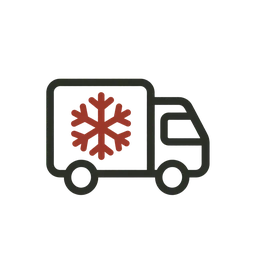

SERVICE 01
ECサイト運営・販売支援
- 商品登録
- ページ制作
- 販売価格の設定
商品登録、商品ページ制作、販売価格の設定、商品説明文の作成など、EC販売に必要な業務をサポートします。売上向上につながる販売戦略もご提案します。

02 / 05
Online sales
掲載写真はイメージです。
Conceptこの事業について
商品登録やページ制作、販売戦略の立案から、受注・在庫管理、梱包・発送まで。北海道の海産物・農産物を扱う会社として、EC販売に関わる業務を一貫してお手伝いします。EC販売のお悩みや業務の外注をご検討中の企業様は、ぜひご相談ください。
Serviceサービス内容
SERVICE 01
商品登録、商品ページ制作、販売価格の設定、商品説明文の作成など、EC販売に必要な業務をサポートします。売上向上につながる販売戦略もご提案します。
SERVICE 02
商品画像の制作、商品企画、販売ページの改善を行い、商品の魅力を効果的に発信します。複数のインターネット販売チャネルを活用し、新たな顧客獲得を目指します。

SERVICE 03
注文確認、在庫管理、商品ピッキング、梱包、発送まで対応します。冷蔵・冷凍商品にも対応し、販売からお届けまで一貫した物流体制を提供します。
掲載写真はイメージです。
Reason選ばれる理由
 01
01北海道の海産物・農産物を中心とした仕入れネットワークを活用。商品の調達から販売まで、幅広いご要望に対応します。
商品企画・画像制作・EC運営・受注管理・梱包・発送まで一括対応。複数の業者に依頼する手間を削減します。

03常温・冷蔵・冷凍商品の取り扱いに対応。北海道から全国のお客様へ、安全で確実な商品配送を目指します。
Price料金
30,000円〜／月
EC販売をこれから始めたい事業者様向け。
80,000円〜／月
販売中のECサイトをさらに成長させたい事業者様向け。
150,000円〜／月
販売から物流までまとめて外注したい事業者様向け。
※料金は目安です。商品数や作業内容によって変わります。詳しくはお見積もりでご案内します。
Flowご利用の流れ

現在の販売状況や取り扱い商品、抱えている課題、ご希望の販売方法などをヒアリングします。
商品や市場に合わせて、販売先の選定、価格設定、商品ページ制作、運営方法をご提案します。
商品登録や販売ページの構築を行い、ECサイトでの販売をスタートします。受注・在庫管理などもサポートします。
注文商品の梱包・発送を行い、販売状況を分析。改善を繰り返しながら、継続的な売上拡大を目指します。
EC販売に関するお悩みや業務の外注をご検討中の企業様は、ぜひ札幌直販へご相談ください。
EC販売について相談するCONTACT
商品のご注文・お取り引き・配送のご相談はこちら。